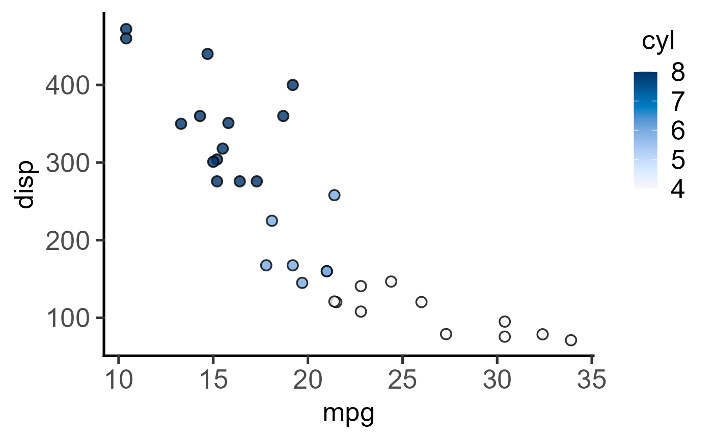

R/plot_xy_NumGroup.R
plot_xy_NumGroup.RdThis function takes a data table, quantitative X and Y variables, and a and plots a graph with using ggplot.
plot_xy_NumGroup(
data,
xcol,
ycol,
NumGroup,
symsize = 2,
symthick = 1,
fontsize = 20,
s_alpha = 1,
TextXAngle = 0
)a data table object, e.g. data.frame or tibble.
name of the column with quantitative X variable
name of the column with quantitative Y variable
a numeric factor for fill aesthetic of data points.
size of point symbols, default set to 2
thickness of symbol border, default set to 1
parameter of base_size of fonts in theme_classic, default set to size 20.
fractional opacity of symbols, default set to 1 (i.e. maximum opacity & zero transparency)
orientation of text on X-axis; default 0 degrees. Change to 45 or 90 to remove overlapping text
This function returns a ggplot2 object.
The function uses geom_point with size = 3, which can be changed using the symsize argument.
The numerical NumGroup variable is mapped to the fill aesthetic of symbols, which receives the scale_fill_grafify_c default palette.
This plot is related to plot_xy_CatGroup which requires a categorical grouping factor.
When summary statistics (mean/median) are required, use plot_3d_scatterbar, plot_3d_scatterbox or plot_4d_scatterbox.
#Basic usage with mtcars data
#The grouping factor gear is numeric
plot_xy_NumGroup(mtcars, mpg, disp, gear)
